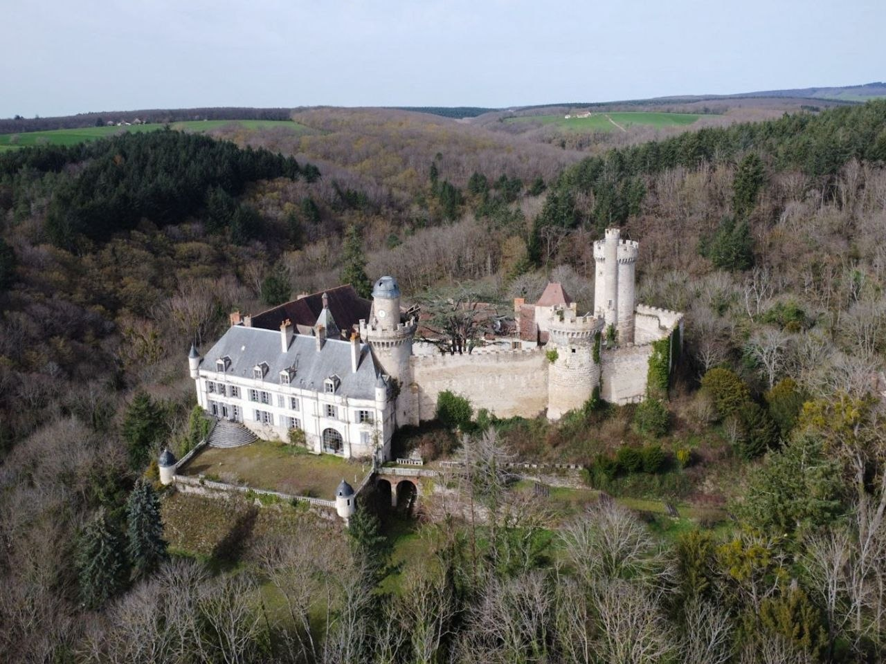

Замок Шато де Веос — это впечатляющий исторический памятник французской архитектуры, затерянный среди живописных холмов и лесов региона Овернь.
Помимо выразительного внешнего облика, замок привлекает своей глубокой историей. В ней переплелись средневековые военные столкновения, масштабные дворянские перестройки и мрачная легенда о призраке, принесшая этому месту мировую известность.
Общая информация
Шато де Веос расположен в департаменте Алье на естественно укрепленном скалистом мысе, откуда открывается стратегический обзор окружающих долин.
Архитектурное сооружение представляет собой гармоничный пример эволюции оборонительной крепости в дворянскую резиденцию. Выразительные башни, высокие крыши и симметричные фасады гармонично сочетаются с окружающим парком и остатками защитных рвов.
Здание возведено из местного камня Шару, отличающегося повышенной прочностью и благородным оттенком, благодаря чему сооружение отлично сохранилось до наших дней.
Сводка данных
- Первые укрепления: Около 800 года
- Местоположение: Департамент Алье (Овернь)
- Архитектурный стиль: Неоготика («Трубадурский стиль»)
- Управление: Фонд Universum
Фортификация и природа
Выбор скалистого мыса и глубоких рвов обеспечивал замку неприступность в средневековые времена. В XIX веке эти оборонительные элементы были успешно вписаны в ландшафт романтического парка.
Хронология замка
Около 800 года
В эпоху правления Карла Великого на этом стратегически важном скалистом выступе возводятся первые укрепления. Изначально это был небольшой деревянно-каменный форпост, выполнявший сугубо дозорные функции. Удачное расположение позволяло гарнизону контролировать долину и своевременно замечать приближение неприятеля. Подобные сторожевые башни играли ключевую роль в системе обороны Франкского государства от внешних набегов. Именно эти скромные строения заложили фундамент для будущего замка.
XI век
С развитием феодальных отношений примитивный форт кардинально перестраивается и превращается в полноценный каменный замок. Центральным элементом новой крепости становится массивный донжон, служивший последним рубежом обороны. Вокруг него постепенно возводятся прочные крепостные стены, способные выдержать длительную осаду. Крепость начинает играть важную экономическую роль, контролируя проходящие через регион торговые пути. Владельцы замка собирают пошлины с купцов, что обеспечивает им статус одного из самых влиятельных сеньоратов Оверни.
1475 год
Этот год становится переломным в истории крепости из-за масштабных междоусобных войн эпохи короля Людовика XI. В ходе ожесточенных столкновений мощные стены и башни замка получают существенные повреждения от артиллерийского огня. Оборонительный потенциал цитадели заметно снижается, что заставляет владельцев пересмотреть ее главное предназначение. Потеряв свое исключительно военное значение, комплекс начинает долгий путь к трансформации в жилую резиденцию. Вместо глухих бойниц появляются широкие окна, а внутренние дворы адаптируются для мирной жизни.
XVI век
Замок переходит во владение знатного аристократического рода де Дайон, что знаменует начало эпохи Возрождения в этих стенах. Новые хозяева приглашают опытных мастеров, чтобы сгладить суровый средневековый облик строения. Массивные каменные своды дополняются изящными элементами ренессансного декора и резными орнаментами. Жилые помещения существенно расширяются, наполняясь светом, гобеленами и дорогой мебелью. Таким образом, бывшая военная твердыня окончательно приобретает черты элегантного и комфортабельного дворянского поместья.
1841–1846 годы
На этот период приходится грандиозная реконструкция под руководством баронов де Кадье, решивших вернуть поместью былое величие. Вдохновившись модным в то время романтическим «трубадурским» стилем, они полностью переосмысливают облик здания. Архитекторы бережно реставрируют обветшавшие фасады, добавляя к ним декоративные башенки и стрельчатые арки. Внутренние интерьеры также подвергаются глубокой переработке с акцентом на неоготическую эстетику.
1844 год
В самый разгар масштабных строительных работ происходит важное символическое событие для всего поместья. На главном фасаде обновленного здания торжественно устанавливается массивная мемориальная плита. Этот памятный знак был призван увековечить значительный вклад баронов де Кадье в возрождение древнего архитектурного наследия. Текст на плите подробно перечисляет основные этапы реставрации и имена мастеров, руководивших процессом. Сегодня этот артефакт служит ценным историческим документом для исследователей архитектуры Оверни.
1846 год
Строительные работы, длившиеся целых пять лет, наконец-то официально завершаются. К этому моменту фасады и внутренние залы приобретают свой окончательный, роскошный вид. В знак утверждения своей власти бароны де Кадье украшают ключевые архитектурные элементы геральдическими щитами. Родовые гербы появляются над каминами, на витражах и над главными въездными воротами. Эти символы аристократической гордости окончательно закрепляют новый, элитарный статус обновленного замка.
1971 год
Этот год ставит точку в длинной, более чем столетней истории владения замком династией Кадье де Веос. Последние представители знатного рода вынуждены продать замок из-за финансовых трудностей. С этого момента для старинного комплекса начинается сложный и нестабильный период частой смены частных собственников. Многие новые владельцы пытаются реализовать здесь коммерческие проекты, но терпят неудачу из-за огромных затрат на содержание. Отсутствие должного ухода приводит к постепенному обветшанию крыш и разрушению уникальных интерьеров.
2002 год
Судьба исторического памятника делает счастливый поворот, когда его приобретает состоятельная семья Минцер. Увидев плачевное состояние замка, новые владельцы немедленно запускают программу экстренных консервационных работ. Главной задачей становится спасение протекающих крыш и защита старинных перекрытий от сырости. Параллельно начинается восстановление оригинальных гобеленов, мебели и деревянных панелей в главных залах. Эти действия буквально спасают Шато де Веос от полного разрушения и забвения.
2015 год
Наступает современный этап в жизни поместья, связанный с передачей прав на управление международному фонду Universum. Эта организация ставит своей целью не просто сохранить здание, но и вдохнуть в него новую жизнь. Фонд впервые в истории замка открывает его двери для широкой публики и запускает регулярные туристические маршруты. Кроме того, на базе комплекса начинают развиваться культурные, образовательные и научные программы. Сегодня Шато де Веос успешно функционирует как живой музей, объединяющий историческое наследие и современные технологии.
Интересные моменты из жизни замка
Многовековая история Шато де Веос оставила после себя множество архитектурных особенностей и загадочных деталей.
Убранство интерьеров
В залах сохранилась редкая коллекция резной мебели, камины и гобелены, отражающие дух французского дворянства XIX века.
Башня и подземелья
Под замком разветвляется сеть подземных ходов и винных погребов, а над комплексом возвышается 45-метровая дозорная башня, выстроенная из камня Шару.
Замурованные тайны
Во время реставрационных работ в нишах башен были найдены скрытые артефакты и замурованные полости, связанные со старинными суевериями и обережными ритуалами.
История о Люси и призраке замка
Наиболее известная страница истории Шато де Веос связана с трагической легендой о девушке по имени Люси, чей призрак, по преданию, до сих пор не покинул стены замка.
«В определенные ночи по коридорам замка разносится тихий шепот, а в арочных окнах башни можно заметить бледный силуэт девушки в белом платье...»
Согласно старинным преданиям Оверни, в XVI веке в замке служила молодая девушка по имени Люси, славившаяся своим трудолюбием, умом и красотой. Юная служанка быстро завоевала уважение всего двора, однако ее красота привлекла внимание хозяина замка — сеньора де Веос. У барона появилась симпатия к ней, и хотя сама Люси всячески избегала его внимания, тайные взгляды и ухаживания дворянина не укрылись от взгляда его крайне ревнивой супруги.
Благоприятный случай для расправы представился баронессе, когда её супруг был вынужден покинуть резиденцию и отправиться на военную кампанию. Оставшись полноправной хозяйкой поместья и движимая слепой завистью, баронесса приказала страже схватить девушку. Люси насильно отвели в самый глухой и неприступный верхний ярус Часовой башни — неотапливаемое помещение с узкими бойницами, куда почти не проникал солнечный свет.
Стражникам было строго запрещено передавать узнице еду и тёплые вещи, а все слуги, сочувствовавшие девушке, запугивались суровой расправой. Люси провела в полном одиночестве и холоде несколько недель, надеясь на освобождение. Не выдержав суровых условий овернской зимы и истощения, юная девушка скончалась в своем заточении задолго до того, как хозяин замка вернулся из похода.
Узнав о гибели Люси, опечаленный барон в знак скорби и раскаяния повелел навсегда называть Часовую башню её именем. Начиная с XIX века и по сей день, очевидцы, туристы и даже группы парапсихологов регулярно сообщают о странных явлениях в стенах «Башни Люси»: тихом плаче в ночных коридорах, движении загадочных теней и бледном женском силуэте, возникающем в арочных окнах верхней галереи.
Современное состояние замка
Сегодня Шато де Веос остается важной культурной точкой региона Овернь, совмещая статус исторического памятника и объекта романтических легенд.
Благодаря поддержке управляющих фондов в замке проводятся необходимые восстановительные работы, позволяющие сохранить старинную архитектуру.
Поместье открыто для посещения: здесь проходят экскурсионные маршруты, посвященные как архитектуре французской неоготики, так и знаменитым тайнам замка.